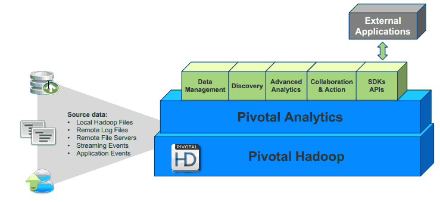

About Pivotal Analytics
Pivotal Analytics is an on-premise analytics platform that runs on the Cloud Foundry platform. It is a software component of the Pivotal One product suite that provides business analysts with tools to analyze business data. Data analysis can be performed in real time and the data sources can come from live application feeds, Syslog feeds, static files, GemFire, Amazon S3, or HDFS.
Pivotal Analytics is an updated, on-premise version of a hosted analytic product formerly called Cetas. This on-premise version is intended to be deployed at customer sites and also requires an on-site deployment of a Pivotal HD cluster. An API is available for integration with external applications.

A Pivotal Analytics installation uses a set of virtual machines that collect data, analyze data, display data visualizations, and manage the system. These virtualized machines include:
- Management nodes
- Query nodes
- Collectors (Syslog) (is this Storm?) (software??)
- Zabbix (what’s this??)
- Pivotal HD (Hadoop) Cluster (not part of Pivotal Analytics, but required). See ??link to PHD docs
A Pivotal Analytics installation uses the following software components
- Pivotal HD services:
- HDFS—a fault tolerant distributed file system which is designed to run on commodity hardware.
- Hive—a data warehouse infrastructure that provides an interface similar to SQL on top of Hadoop.
- HBase—a distributed, column-oriented database that uses HDFS for storing data.
- Jobtracker—manages MapReduce jobs
- YARN—a framework that facilitates writing distributed processing frameworks and applications and supports MapReduce version 2.
- Pivotal Analytics data analysis (?? name)
- End-users access Pivotal Analytics installation, configuration, and data visualization tools via a Web browser.
Pivotal Analytics Documentation
The following documentation resources are available:
{kind=link}
{kind=link}
{kind=link}